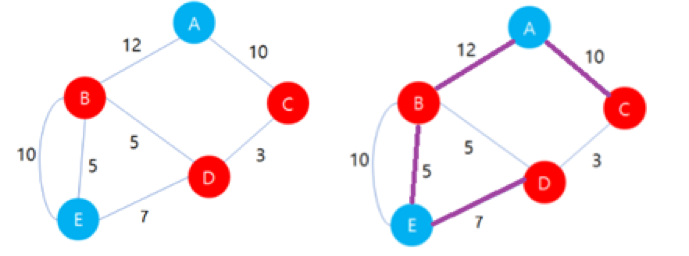

깽미는 24살 모태솔로이다. 깽미는 대마법사가 될 순 없다며 자신의 프로그래밍 능력을 이용하여 미팅 어플리케이션을 만들기로 결심했다. 미팅 앱은 대학생을 타겟으로 만들어졌으며 대학교간의 도로 데이터를 수집하여 만들었다.
이 앱은 사용자들을 위해 사심 경로를 제공한다. 이 경로는 3가지 특징을 가지고 있다.
만약 도로 데이터가 만약 왼쪽의 그림과 같다면, 오른쪽 그림의 보라색 선과 같이 경로를 구성하면 위의 3가지 조건을 만족하는 경로를 만들 수 있다.

이때, 주어지는 거리 데이터를 이용하여 사심 경로의 길이를 구해보자.
입력의 첫째 줄에 학교의 수 N와 학교를 연결하는 도로의 개수 M이 주어진다. (2 ≤ N ≤ 1,000) (1 ≤ M ≤ 10,000)
둘째 줄에 각 학교가 남초 대학교라면 M, 여초 대학교라면 W이 주어진다.
다음 M개의 줄에 u v d가 주어지며 u학교와 v학교가 연결되어 있으며 이 거리는 d임을 나타낸다. (1 ≤ u, v ≤ N) , (1 ≤ d ≤ 1,000)
깽미가 만든 앱의 경로 길이를 출력한다. (모든 학교를 연결하는 경로가 없을 경우 -1을 출력한다.)
Input:
5 7
M W W W M
1 2 12
1 3 10
4 2 5
5 2 5
2 5 10
3 4 3
5 4 7
Output:
34